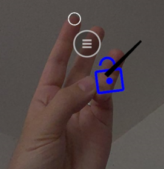
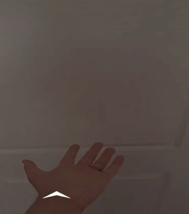
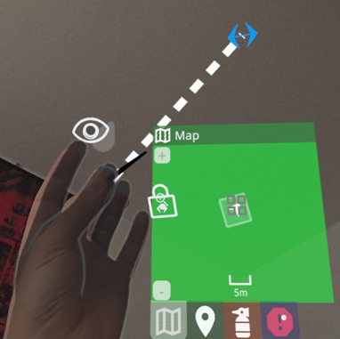
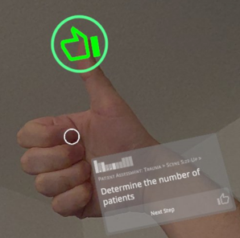

|
FirstModulAR 0.1.0
|
|
FirstModulAR 0.1.0
|
The FMAR Gestures package provides a suite of helpful cross-platform gesture recognition scripts.
The directional pinch gesture is the simplest gesture. It is activated by:
Optionally, the gesture may be activated only on a "double pinch," which significantly helps reduce false positives.

The open palm thrust gesture is activated by:
The thrust direction is defined by the developer, allowing for the same hand to perform different actions based on thrust direction, speed, and duration.

This gesture is likely the least intuitive of the bunch. Initial activation of this gesture is similar to the "Directional Pinch Gesture." Afterwards, the user needs to:
The distance of their hand from the starting position and the direction from the starting position are used to calculate scrollbar or joystick-like behaviors.

Likely the most intuitive gesture of the group, the thumbs-up gesture is what you might expect. The user must:
This gesture can be rotated to act as a thumbs-down gesture, thumbs-sideways, etc. Note that the gesture is activated from the perspective of the user, so a thumbs-up is "up" if it is "up" from the user's viewport, not world space. For instance, if the user was looking straight upwards while doing a thumbs-up gesture, their thumb would actually be pointing backwards behind them but would look as if it is "up" to the user.
